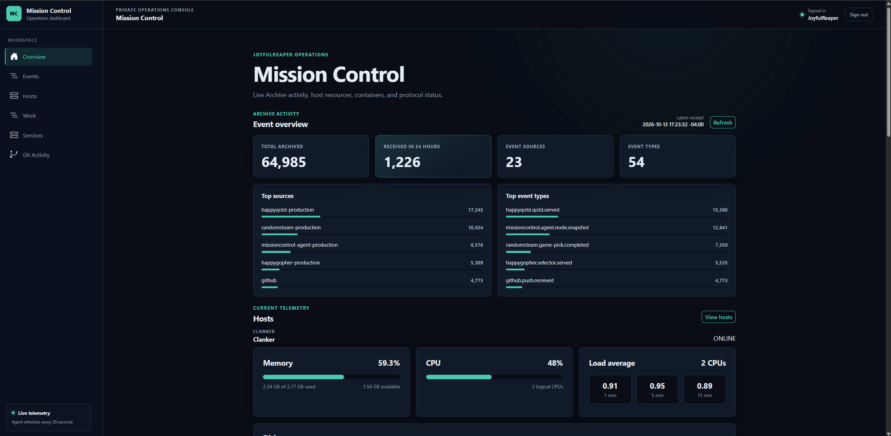
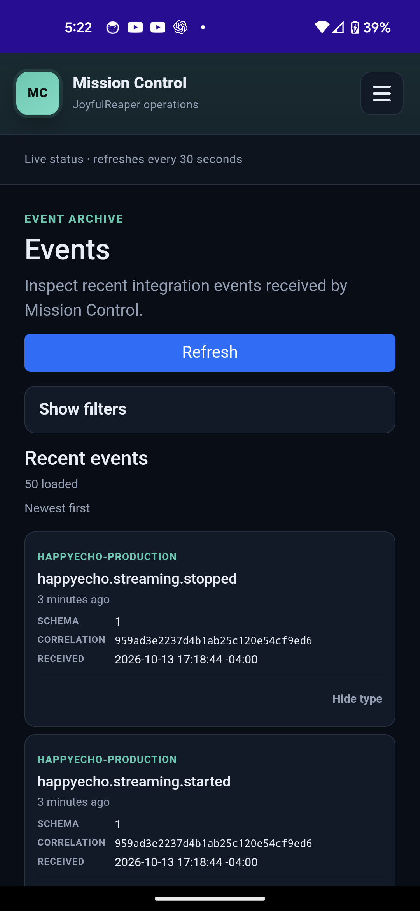

Failures stay local
One dead Agent, broken Docker socket, failed protocol probe, or unavailable bandwidth provider should not erase otherwise useful information.
projects/mission-control
A self-hosted operations system for the services and machines I run: centralized event history, live infrastructure state, service health, Git activity, bandwidth, and the other things I got tired of checking one machine at a time.
.NET 10 · ASP.NET Core · Blazor · .NET MAUI · NATS JetStream · SQLite · Docker · Linux
Mission Control started because I was tired of tailing logs on different machines whenever I wanted to figure out what one of my services was doing. At a previous job I had worked with a centralized event stream, and I wanted something similar for my own infrastructure: one place where applications could report useful events and I could browse what had happened.
The original MVP was deliberately narrow: accept events, store them, and give me a decent event viewer. It was always meant to grow beyond that. Over time it became the place I use for live infrastructure status, Git activity, service health, bandwidth, work planning, and operational history.
There was not really a grand product thesis behind it. I wanted this thing, so I built it.

Mission Control combines two different kinds of operational data instead of forcing everything into one storage model.
Durable events enter through the Gateway and flow through NATS JetStream. Independent consumers archive complete event envelopes and build specialized projections such as recent Git activity.
Live infrastructure state stays closer to the machines themselves. An Agent on each monitored node collects host resources, Docker state, disks, and protocol checks, stores its latest snapshot locally, and exposes a sanitized API that the Dashboard queries directly.
The event and live-state paths meet in the UI, but they deliberately have different sources of truth. An archived Agent event is useful history; it is not treated as the current state of a machine.
The Dashboard and mobile app give me one place to check things that otherwise would mean bouncing between logs, SSH sessions, provider dashboards, and individual services.

Mission Control started as an event pipeline and viewer, then grew in the direction I actually needed while using it. Agents added current machine and service state. The Dashboard became an authenticated operations workspace. A .NET MAUI app made the same information useful away from a desktop.
The early event pipeline used RabbitMQ. I later moved the messaging layer to NATS JetStream, partly to reduce the resource footprint on shared VPS infrastructure and partly because JetStream fit the event model well: durable consumers, bounded retention, explicit acknowledgements, redelivery behavior, and message de-duplication.
It also grew from monitoring a single Agent into a multi-node fleet. The current system treats nodes independently, keeps useful last-known state when a machine or provider is temporarily unavailable, and isolates malformed or failed responses instead of allowing one broken dependency to wipe out the rest of the view.
One dead Agent, broken Docker socket, failed protocol probe, or unavailable bandwidth provider should not erase otherwise useful information.
When a refresh fails, the Dashboard can retain a previously good snapshot and mark it stale instead of pretending the host never existed.
Agents own current machine state. The event pipeline owns durable history. Mission Control does not need to store every resource sample forever just because it can.
Mobile talks to the Dashboard rather than carrying credentials for Agents, Archive, Git Activity, bandwidth providers, or work planning integrations.
Mission Control is actively deployed and is the operations dashboard I use for my own VPS, home infrastructure, public services, and experiments. It continues to change as I add machines and find new things I would rather not SSH into five servers to check manually.